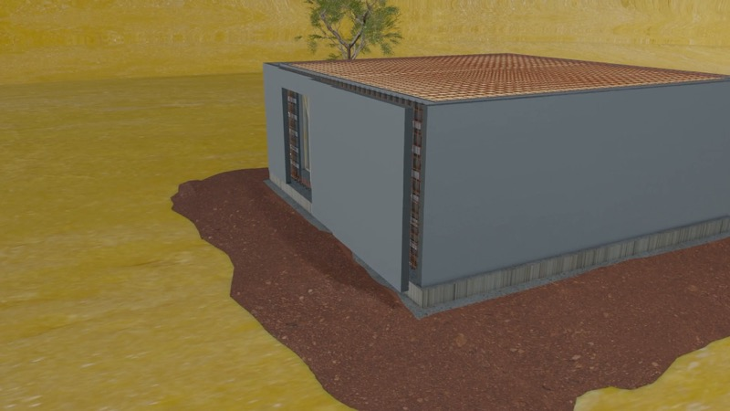

1
Formwork
EPS walls are raised and fixed to the foundation with lateral wooden supports. Dry assembly: no mortar, no insulation losses.
No crane. No endless structure. The Polistibrick system assembles air-dried, element by element, by a team of 2 to 3 people — up to closed formwork, ready for the concrete pour.
Complete assembly, from ground level to closed formwork.
From foundation to closed formwork. The entire process in a few weeks, with just 2–3 people on site — no mortar and no insulation losses.
EPS walls are raised and fixed to the foundation with lateral wooden supports. Dry assembly: no mortar, no insulation losses.

PBK 250 panels installed horizontally — EPS-Graphite + fibre cement layers ready to receive reinforcement.

Steel mesh is installed between EPS-Graphite ribs. This creates the monolithic connection between walls and floor.

All elements are assembled and verified. The house is now ready for the concrete pour.
The elements are lightweight and handled by hand. No heavy lifting equipment, no special site access required.
A small team is enough. Less labour, less coordination, lower site costs.
Assembly is mechanical and dry. No drying time between stages, no weather blocking the site.
Structure closed in weeks, not months. You move in sooner and pay less construction loan interest.
After pouring, concrete and insulation become one. A continuous shell, without joints or thermal bridges.
Minimal waste, minimal dust, factory tolerances. An orderly site from start to finish.
Insulating formwork raised by hand. Integrated insulation, ready for concrete.
See MBK walls → FloorsLoad-bearing EPS-Graphite + fibre cement slabs, installed horizontally and reinforced on site.
See the PBK floors → RoofThe Passivhaus roof that leaves the factory ready to install. Airtight, no thermal bridges.
See the TBK roof →Are you a builder? Detailed installation manuals, element-by-element videos (walls, floors, roof) and technical datasheets are available in the professional area.
Builders' spaceSend us your plans and receive a personalised quote within 48 hours. No obligation, no hidden costs.